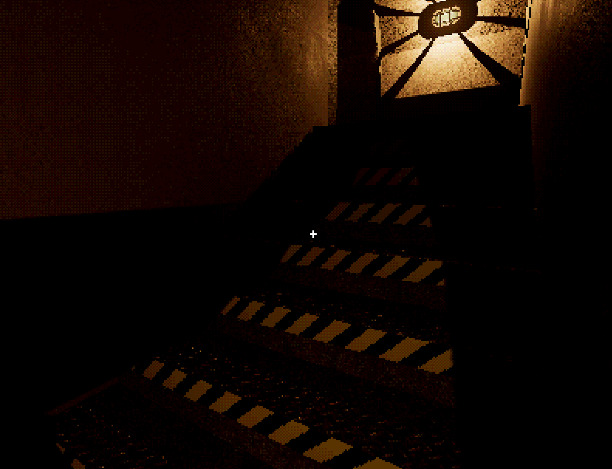

Unreal Engine Five - Level Design/Tools
Key points:
For an overview of key UE5 features developed, click here. To see all development summaries, click here.Level Design Tools:
Dynamic Stair Generation
Making a proper level, the need to make and adjust stairs of various dimensions on the fly became a problem.
Both stairs made with UE5 modelling mode's stair mesh generator, and cubegrid tool, were unsuitable for on-the-fly adjustments to dimensions, step count and more.
To solve this, I created a tool for generating and adjusting stairs made from an instanced static mesh component.
When the mesh of a single step is provided, the player can specify the number of steps and their increment to fill in any gap as required.
The bounds of steps may also be used, as well as custom starting positions, to help fit more spaces without needing to make new meshes.
I also included a ramp collision, which automatically adjusts itself to the size of the generated stairs.
This is purely for character collisions, to provide smoother movement instead of a sharp jump upwards with each step taken.
The stair setup utilises the "CallInEditor" UFUNCTION specifier so all adjustments can be easily done in the editor.
const UStaticMesh* InstancedMesh = InstancedMeshComponent->GetStaticMesh();
if (!RampMesh->GetStaticMesh() || !InstancedMesh) return;
// Clear previous mesh instances
InstancedMeshComponent->ClearInstances();
// Begin offset at zero, or custom position
FVector Offset = (CustomIncrement) ? StartOffset : FVector(0.0f);
// Get full dimensions of a stair step
const FVector Bounds = InstancedMesh->GetBounds().BoxExtent*2;
// Increment step position by bounds, or custom distance
Increment = (CustomIncrement) ? Increment : FVector(Bounds.X, 0.0f, Bounds.Z);
// Create the first step instance
FTransform InstanceTransform{ FRotator(0.0f), Offset, FVector(1.0f) };
InstancedMeshComponent->AddInstance(InstanceTransform);
for (int i = 1; i < Steps; i++)
{
// Increment the offset position
Offset += Increment;
InstanceTransform.SetTranslation(Offset);
// Create a new step instance there
InstancedMeshComponent->AddInstance(InstanceTransform);
}
// Set ramp scale to match the distance covered by all steps combined
Offset += Bounds;
RampMesh->SetRelativeScale3D(Offset/100);
This has worked wonderfully so far, allowing me to easily make and alter stairs as I work on levels.
I have also used the "EditCondition" and "EditConditionHides" UPROPERTY specifiers to hide the custom parameters unless a custom increment is enabled for the stairs.
This helps to simplify and remove clutter from the interface, for other users.
Area Particle Effects

I found whilst working that fog particle effects worked surprisingly well with my downsampling and colour quantisation/dithering.
To help apply these to the level easily, I created tools for setting user parameters for the Niagara particle systems within the level in-editor.
A volume, such as a box or capsule, can help to visualise the extent of the particle spawn area, which can then be applied to the particle system at the press of a button.
Other parameters allow for altering the spawn-rate, lifespan and size of fog particles, amongst other things.
Initial Level Work:
This section is more detached from my design and programming work, but nonetheless still involved learning to work with the engine.
Unreal Engine provided useful tools for prototyping and making levels entirely within the engine.
Early experimentation with additive and subtractive geometry brushes proved interesting, but ultimately unwieldy and with unexpected impacts on the handling of raycast results.
I quickly settled on working with the cubegrid system, which proved wonderful for both blockout work and creating proper level geometry.
Using a collection of material textures, cubegrid can be used to make acceptable level geometry in the engine, with easy access to other terrain and objects for reference and scale.
Cubegrid does have limitations, such as the ability to easily and unecessarily quadruple the number of vertices of a mesh if it is not used in specific ways, but these issues can be avoided once known.
Using a collection of material textures, cubegrid can be used to make acceptable level geometry in the engine, with easy access to other terrain and objects for reference and scale.
Cubegrid does have limitations, such as the ability to easily and unecessarily quadruple the number of vertices of a mesh if it is not used in specific ways, but these issues can be avoided once known.
I followed basic level design principles, working and testing blockouts before iterating with proper geometry.
Beyond cubegrid geometry, commonly used meshes such as pipes use shared materials and LODs where possible, often in "packed-level actors" to improve performance.
Creating and testing a proper level gave me lots of useful knowledge for how to further develop game mechanics, and experience utilising the tools I had made.
For an overview of key UE5 features developed, click here. To see all development summaries, click here.